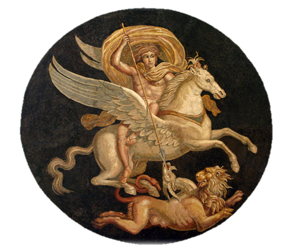

Khi còn sống, Sisyphe lấy một nàng Pléiades tên là Mérope làm vợ. Họ sinh được một con trai đặt tên là Glaucos. Sau khi Sisyphe chết, Glaucos lên làm vua tiếp tục trị vì trên đô thành Éphyre. Glaucos là một vị vua nổi danh vì tài cưỡi ngựa. Bất cứ con ngựa nào dù hung dữ bất kham đến đâu hễ vào tay ông là sớm muộn cũng phải khuất phục. Đàn ngựa của ông rất quý, nhất là những con ngựa được tuyển chọn để thắng vào cỗ xe của ông thì lại càng quý hơn nữa. Chúng phi như bay, vượt qua các chướng ngại một cách khôn khéo, đoán biết được ý định của chủ, thông minh đến nỗi người ta tưởng chừng chúng nghe được cả tiếng người. Chúng đã đem lại cho ông khá nhiều vinh quang trong những cuộc thi đấu ở các ngày hội Glaucos. Tuy vậy, ông vẫn không hề bằng lòng, thỏa mãn với bầy ngựa của mình. Ông muốn chúng phải bỏ xa, vượt xa những con ngựa danh tiếng nhất mà ông đã từng được biết, và ông nghĩ ra một cách để cho bầy ngựa của mình có thể vươn lên hơn hẳn cả đối thủ: ông không cho bầy ngựa của ông giao phối. Việc làm của ông khiến nữ thần Aphrodite bất bình. Vị nữ thần Tình yêu và Sắc đẹp này tỏ vẻ không hài lòng trước một hành động vi phạm vào luật lệ của tạo hóa như vậy, hơn nữa như vậy tỏ ra độc ác và tàn nhẫn. Aphrodite bèn tâu với Zeus và xin Zeus trừng phạt, nhưng Zeus giao toàn quyền cho Aphrodite. Được Zeus cho phép, nữ thần Aphrodite tìm cách cho những con ngựa của Glaucos uống nước ở một con suối thần, vì thế những con ngựa trở nên rất khỏe, rất hung dữ đến mức chúng có thể ăn được thịt người, thèm khát ăn thịt người.
Thế rồi trong một ngày hội tưởng niệm vị vua Pélias, Glaucos được mời tham dự. Ông tham gia trò đua xe ngựa. Nhưng rủi ro thay, cỗ xe của ông phóng quá nhanh bị lật đổ! Những con ngựa của ông đã xéo chết ông và ăn thịt ông. Có chuyện lại kể, chính Glaucos đã nuôi ngựa của mình bằng thịt người. Việc làm này khiến các vị thần tức giận và quyết định trừng phạt ông. Tham gia thi đấu, xe của ông bị đổ và chính những con ngựa đã từng nhiễm cái thói quen ăn thịt người do chủ nó nuôi nấng lúc này hăng máu lên ăn thịt luôn chủ nó.
Glaucos có một con trai tên là Bellérophon. Thật ra cái tên này sau này mới có. Lúc đầu chàng trai này tên là Hipponoos. Hồi ấy ở thành Corinthe nổi lên một tên tiếm vương độc ác tên là Belléros. Hắn cướp ngôi vua, thực hành nhiều chính sách bạo ngược khiến cho nhân dân oán thán. Hipponoos đã tìm cách trừ khử tên bạo chúa này. Vì lẽ đó cũng từ đó, người ta không gọi chàng thanh niên dũng cảm ấy bằng cái tên Hipponoos nữa mà gọi là Bellérophon theo tiếng Hy Lạp nghĩa là: “Người giết Belléros”. Nhưng theo luật lệ người xưa, sát nhân là một trọng tội, kẻ sát nhân phải đưa ra xét xử và phải chịu những hình phạt rất nặng. Bellérophon vì thế phải từ bỏ đô thành Corinthe trốn sang Tirynthe, xin nhà vua đô thành này tên là Proétos cho trú ngụ. Vua Proétos đã làm lễ rửa tội và tẩy uế cho chàng, cho chàng sống trong cung điện cùng với gia đình nhà vua. Cuộc sống tưởng cứ thế trôi đi bình yên và êm đẹp ngờ đâu lại xảy ra một chuyện thật xấu xa hết chỗ nói. Hoàng hậu Sthénébée vợ của vua Proétos vốn là một phụ nữ đa tình. Nàng đem lòng thầm yêu chàng trai cường tráng và xinh đẹp Bellérophon mà Bellérophon không biết. Bữa kia nhân lúc vắng chồng, Sthénébée lân la trò chuyện với Bellérophon và biểu lộ dục vọng của mình khá là thô thiển. Bellérophon, trước thái độ đó của Sthénébée, rất khó chịu. Nhưng chàng chỉ biết khéo léo khước từ. Bị cự tuyệt, Sthénébée nghỉ cách trả thù Bellérophon. Nàng chờ lúc chồng về, đến gặp chồng và đặt điều vu cáo cho Bellérophon đã có những hành động lả lơi, sàm sỡ với nàng, xúc phạm thô bạo đến danh tiết của nàng. Nàng đòi chồng phải giết Bellérophon để rửa nhục cho mình. Nghe vợ nói, nhà vua không mảy may một chút nghi ngờ. Ông vô cùng tức giận muốn giết ngay Bellérophon cho hả lòng hả dạ. Nhưng giết một người đâu có phải chuyện thường. Các nữ thần Eiréné sẽ truy đuổi và đòi trừng phạt. Thần Zeus làm sao có thể tha thứ được việc ám hại một người khách ngay tại nhà mình. Nghĩ mãi không tìm cách gì để hạ sát Bellérophon cho ổn, cuối cùng Proétos thấy tốt nhất là nhờ bàn tay ông cụ bố vợ mình, lão vương Iobatès trị vì trên đất Lycie. Nhà vua bèn viết một bức mật thư gửi cho cụ, trong thư nói Bellérophon đã can tội xúc phạm đến mình, xin cụ ra tay trừng trị giúp. Bức thư được viết bằng một ký hiệu bí mật trên một tấm “giấy” bằng đất nung mà chỉ riêng hai người hiểu được và giao cho Bellérophon mang đi.
Bellérophon lên đường sang xứ Lycie. Sau một chặng đường dài mệt mỏi, chàng tới được mảnh đất nổi tiếng là giàu và đẹp này. Lão vương Iobatès mở tiệc thết đãi người khách quý, và theo như phong tục người Hy Lạp cổ xưa, Iobatès chỉ hỏi tên họ của khách sau khi khách đã ăn uống no say. Bellérophon dâng lão vương bức thư của Proétos. Đọc xong thư, Iobatès thấy ớn lạnh cả người. Con rể của lão đã nhờ lão làm một việc thật khó, khó hết chỗ nói. Dù sao thì lão cũng lưu giữ chàng trai ở lại cung điện ít ngày để liệu bề đối xử. Sống gần chàng thanh niên khỏe mạnh, trong sáng và hồn nhiên, lão vương Iobatès đâm ra thấy mến Bellérophon. Lão không thể tin được, ngờ được, con người hồn nhiên và trong sáng như thế lại có thể phạm vào cái tội xấu xa, ô uế như con rể của lão viết thư cho lão biết. Có phần nào, đúng ra, Iobatès cảm thấy hơi khó tin. Đó là một lẽ khiến lão không thể đang tâm giết một con người mà mình cảm thấy chẳng có gì đáng ghét, đáng thù hằn. Còn một lẽ thứ hai nữa là, giết người là một trọng tội. Thần Zeus và các thần Olympe cũng như các vị thần ở dưới vương quốc của Hadès chẳng thể nào tha thứ cho kẻ phạm tội tày đình đó. Nếu Bellérophon phạm tội đối với Proétos thì sao Proétos không đích thân tự tay trừng trị Bellérophon mà lại phải nhờ đến tay mình? Iobatès nghĩ thế. Đúng là hắn sợ phạm tội giết người. Nếu hắn đã sợ thì tại sao mình lại không sợ? Tại sao mình phải nhúng tay vào một tội ác đẫm máu để hứng chịu lấy mọi hình phạt? Nghĩ thế nên cuối cùng Iobatès quyết định tha cho Bellérophon. Nhưng không phải là tha bổng, tha hoàn toàn. Lão vương nghĩ ra một cách trừng trị: bắt Bellérophon phải thanh trừ con quái vật Chimère. Đây là một quái vật rất dữ tợn, khủng khiếp, đầu sư tử, đuôi rồng, thân dê. Có người lại nói Chimère có ba đầu: sư tử là một, rồng là hai, dê là ba, mọc chung trên một thân. Lai lịch của Chimère như sau: bố là Typhon, một ác quỷ khổng lồ có trăm đầu, cao như núi; mẹ là Échidna, một con quỷ cái có dễ to lớn không thua kém gì chồng, nửa người nửa rắn. Đối với lão vương Iobatès thì đây là một sự trừng phạt tránh được cho lão khỏi phạm tội ác. Còn đối với chàng thanh niên Bellérophon thì đây là một sự thách thức chí trai. Người xưa có chỗ còn kể, sở dĩ Bellérophon dám lên đường đi tiêu trừ quái vật Chimère là vì chàng vốn là con của thần Poséidon, bởi chỉ có con thần cháu thánh thì mới có được sức mạnh hơn người để chấp nhận cuộc thách thức. Mẹ của Bellérophon, nàng Eurynomé, tuy là một người trần tục nhưng đã được nữ thần Athéna dạy dỗ, đã từng là học trò yêu của nữ thần, cho nên về trí thông minh và sự khôn ngoan, hiểu biết nàng có thể sánh ngang các vị thần. Chính nàng đã truyền dạy lại những “báu vật” thần thánh ban cho ấy cho người con trai yêu quý của mình nên chàng mới có một trái tim dũng cảm mưu trí.
Nhưng để chiến thắng được quái vật Chimère chạy nhanh như gió, phun ra lửa, Bellérophon phải có một vũ khí gì ưu việt. Chàng được biết người anh hùng Persée trong cuộc đọ sức với ác quỷ Méduse đã chiến thắng rất oanh liệt nhờ đôi dép có cánh. Chàng thấy có lẽ chàng cũng phải tìm được đôi dép thần như thế để có thể bay trên trời cao sà xuống giao đấu với quái vật. Nhưng tìm đâu ra đôi dép kỳ diệu ấy? Bỗng Bellérophon nhớ đến con thần mã Pégase từ cổ ác quỷ Méduse khi bị chém bay vụt ra, bay vụt lên trời. Phải tìm bằng được con thần mã đó, Bellérophon nghĩ thế, và chàng bắt tay ngay vào công việc chuẩn bị cho cuộc hành trình đi chinh phục Pégase. Muốn chinh phục Pégase, Bellérophon, theo như người ta nói, phải lần mò tới đỉnh núi Hélicon, ngọn núi của các nàng Muses. Nơi đây có con suối Hippocrène, bắt nguồn từ một thác nước, chảy uốn khúc giữa hai bên bờ cỏ xanh rờn. Pégase thường từ trời cao hạ cánh xuống đỉnh núi và đến uống nước ở dòng suối đó. Lại có người nói, Pégase còn xuống uống nước ở suối Pirène trên núi Acrocorinthe173. Nhưng làm thế nào để bắt được con ngựa thần ấy, một con ngựa mà khi thoáng thấy bóng người là nó đã vỗ cánh bay thẳng lên trời? Bellérophon sau nhiều lần rình bắt không được đành phải tìm đến nhà tiên tri Polyidos để xin một lời chỉ dẫn. Polyidos khuyên Bellérophon nên đến đền thờ nữ thần Athéna, cầu khấn nữ thần và ngủ lại đền thờ để chờ linh nghiệm. Tuân theo lời chỉ dẫn, đêm hôm đó ngủ lại đền thờ, Bellérophon đã nằm mơ thấy một giấc mơ kỳ lạ. Các vị thần Olympe uy nghiêm ngự trị trên đỉnh núi cao bốn mùa mây phủ, truyền cho Bellérophon sức mạnh chinh phục con thần mã Pégase. Nữ thần Athéna tiến đến bên chàng và bảo:
- Bellérophon hỡi! Con ngủ mãi như thế này sao? Hãy mau tỉnh dậy và thắng bộ cương này vào con thần mã Pégase chứ! Con ngựa thần thánh ấy đang chờ con đấy!
Bellérophon giật mình tỉnh dậy. Chàng chẳng thấy một vị thần nào bên chàng. Nhưng ở trên mặt đất bên chỗ chàng nằm rực sáng lên một bộ dây cương bằng vàng, một bộ dây cương mà chàng chưa hề trông thấy trên đời này bao giờ. Ánh sáng của nó cứ tỏa ra ngời ngợi như những tia nắng vàng của thần Mặt trời-Hélios Hypérion. Chàng quỳ xuống nâng bộ dây cương lên rồi kính cẩn cúi đầu lạy tạ các vị thần Olympe, lòng chứa chan hy vọng, Bellérophon chạy như bay đi tìm Pégase: cũng phải mất một thời gian vất vả rình mò, Bellérophon mới đón được Pégase. Hôm đó như thói quen, Pégase từ trời cao hạ cánh xuống đồng cỏ bên bờ suối Pirène. Sau khi gặm những búi cỏ xanh non, Pégase đi ra suối uống nước. Bellérophon từ chỗ nấp của mình chạy tới chỗ Pégase. Nghe tiếng động, Pégase cất đầu lên khỏi dòng suối định vỗ cánh bay. Nhưng trông thấy Bellérophon chạy tới với bộ cương vàng tỏa sáng ngời ngợi, Pégase ngoan ngoãn để Bellérophon thắng cương. Thế là chàng Bellérophon đã có một “vũ khí” ưu việt hơn ác quỷ Chimère. Với bộ áo giáp đồng và chiếc khiên đồng ngời sáng, với cây cung và ống tên đầy ắp, gươm đeo bên sườn, Bellérophon nhảy lên lưng con thần mã trắng muốt như tuyết giật cương. Con ngựa hí lên một tiếng mừng rỡ, vỗ cánh tung vó, rẽ mây đưa Bellérophon hay vút lên trời cao.
Bellérophon bay ngay đến ngọn núi hang ổ của Chimère. Chàng cho thần mã Pégase hạ cánh xuống đất rồi tìm vào hang Chimère nhử nó ra ngoài. Trúng kế, Chimère từ trong hang lao vút ra như tên bắn tìm địch thủ. Ba dòng lửa từ ba miệng của ác quỷ phun ra quệt vào nơi đâu là nơi đó bốc cháy ngùn ngụt. Bellérophon nhanh như cắt nhảy phóc lên lưng con thần mã giật cương. Chàng bay vọt lên trời cao như chim đại bàng. Chàng điều khiển con thần mã thu hẹp vòng lượn lại và hạ thấp xuống, rồi bất chợt chàng giật cương cho Pégase nhằm thẳng ác quỷ Chimère đâm bổ xuống, cùng lúc đó, chàng giương cung bắn liên tiếp những mũi tên ác hiểm, có một không hai, xuống ác quỷ Chimère. Đến đây ta phải dừng lại để kể qua về những mũi tên đặc biệt của Bellérophon. Đây không phải là những mũi tên đồng của các trang anh hùng dũng sĩ danh tiếng, cũng không phải là những mũi tên tẩm độc như những mũi tên của Héraclès, lại càng không phải là những mũi tên vàng của vị thần Xạ thủ có cây cung bạc Apollon hay những mũi tên vô hình của vị thần Tình yêu-Éros, mà là những mũi tên chì, Bellérophon theo lời chỉ dẫn của các vị thần đã làm riêng để trừng trị ác quỷ. Chimère phun ra những dòng lửa đốt cháy hết mọi vật xung quanh. Những mũi tên chì bắn vào thân hình giãy nóng hừng hực của nó, lại được bầu không khí xung quanh nó bị đốt cháy cũng nóng như thế, làm chảy chì ra, vết thương do những mũi chì bắn vào là không cách gì cứu chữa nổi.
Bellérophon bắn liên tiếp những mũi tên này đến những mũi tên khác. Chimère biết địch thủ của mình từ trên trời cao đánh xuống, liền ngóc đầu lên để phun lửa thì đã quá muộn. Con thần mã Pégase đã bay vọt lên cao và lượn về phía sau lưng Chimère. Đau đớn điên cuồng, Chimère phóng lửa bừa bãi đốt núi đá thành vôi, đất rừng cây thành than tro. Núi sạt lở, cây cháy đổ ầm ầm, lửa bốc ngùn ngụt, khói bụi mù mịt khiến Chimère càng không sao trông thấy, tìm thấy địch thủ. Nó chết trong sự điên cuồng của nó và bị chính những ngọn lửa của nó đốt cháy thành tro.
Bellérophon hoàn thành sứ mạng của Iobatès. Chàng trở về cung điện với chiến công hiển hách, vinh quang lẫy lừng.

Bellérophon giết Chimère
Nhưng Iobatès lại trao cho Bellérophon một sứ mạng nguy hiểm khác nữa: chinh phục những bộ lạc Solymes và những bạn đồng minh của họ là những nữ chiến binh Amazones. Cần phải nói qua về những nữ chiến binh Amazones thì chúng ta mới thấy hết được những khó khăn và nguy hiểm mà Bellérophon sẽ phải đương đầu. Những bộ lạc Amazones là những bộ lạc thuần đàn bà, tuyệt không có lấy một người đàn ông nào. Tổ tiên họ xưa kia là một dòng giống kỳ lạ: những người phụ nữ ham mê chiến trận và rất tài giỏi trong sự nghiệp chinh phạt, giao tranh. Cứ thế hết đời này đến đời khác những nữ chiến sĩ Amazones sống dưới quyền cai quản của một nữ hoàng. Họ xây dựng đô thành trên bờ sông Thermodon đặt tên là Thémiscyre. Có người kể, họ sống trên bờ sông Méolide ở biển Asope. Nhưng sống không có đàn ông thì làm sao những người Amazones bảo tồn, duy trì và phát triển được nòi giống? Thế nhưng những nữ chiến sĩ Amazones vẫn tồn tại và phát triển. Họ làm theo cách sau: mỗi năm đón mời những người đàn ông ở bộ lạc láng giềng sang chơi một lần, và đó cũng và lễ kết hôn của họ. Sau đó họ đuổi những người “chồng” này trở về bộ lạc của chồng. Sau cuộc kết hôn ấy, những bà mẹ nào đẻ con ra, nếu là con gái thì giữ lại ở bộ lạc Amazones, còn nếu là con trai thì đuổi về sống với bộ lạc “bố” của chúng. Người xưa còn kể, những nữ chiến sĩ Amazones để thuận tiện cho việc bắn cung, vì họ vốn là những cung thủ có truyền thống bách phát bách trúng, đã đốt hoặc cắt đi một bên vú phải của mình174. Có người lại nói, con trai đẻ ra và họ đem giết ngay. Những người Amazones tung hoành khắp vùng bờ biển Tiểu Á đánh bại hầu hết những bộ lạc lân cận nhờ vào ưu thế cưỡi ngựa bắn cung của họ. Bellérophon dẹp xong khối liên minh của hai bộ lạc Solymes và Amazones bảo vệ được đất nước Lycie của Iobatès khiến cho quân thù khiếp sợ không dám bén mảng đến cướp phá. Với con thần mã Pégase thì tài cưỡi ngựa bắn cung của những người Amazones phải nhường chỗ cho người anh hùng Bellérophon.
Iobatès vẫn chưa thôi thử thách. Lần này nhà vua cử những trang anh hùng danh tiếng của mình thống lĩnh một đội quân đi phục kích Bellérophon khi biết tin chàng đã chiến thắng và đang trên đường trở về. Bellérophon mặc dù bị đánh bất ngờ vẫn không hề nao núng. Chàng lần lượt hạ các đối thủ. Chỉ đến lúc này lão vương Iobatès mới thật sự thừa nhận chiến công vĩ đại của Bellérophon. Lão vương cho mở tiệc mừng trọng thể, hơn nữa lại còn gả con gái cho chàng và chia cho chàng một nửa giang sơn để chàng cai quản. Nhân dân Lycie coi chàng là vị anh hùng vĩ đại của đất nước và trao tặng chàng những tặng phẩm hậu hĩ.
Mọi việc xong xuôi, Bellérophon lần đường về thăm lại vương quốc Tirynthe của nhà vua Proétos. Được tin Bellérophon trở về, Sthénébée xấu hổ vì hành động xấu xa của mình, tự tử.
Cuộc đời của người anh hùng những tưởng sẽ còn lập được nhiều chiến công vinh quang hiển hách hơn nữa cho đất nước Lycie, ngờ đâu, Bellérophon chẳng rõ vì sao bữa kia lại nảy ra ý định ngông cuồng muốn sánh ngang các vị thần. Chàng không muốn sống ở thế giới trần tục của những người đoản mệnh mà muốn sống trên thế giới Olympe của các vị thần bất tử. Chàng nghĩ rằng chiến công của mình có thể cho phép mình sánh ngang các bậc thần thánh. Thế là Bellérophon cưỡi con thần mã Pégase bay thẳng lên trời cao, bay lên cao, cao mãi vượt hết tầng mây thấp đến tầng mây cao để tới thế giới Olympe. Nhưng thế giới thần thánh do Zeus trị vì đâu có phải chuyện chơi, ai muốn lên thì cứ tự ý lên, chẳng có luật lệ, phép tắc gì cả. Thần Zeus trông thấy Bellérophon cưỡi con Pégase đang rẽ mây lướt gió bay lên, thần chau mày nổi giận. Thần phất tay mạnh một cái. Thế là con thần mã bỗng trở nên hung hăng trái tính trái nết. Nó lồng lên, đường đi nước chạy không còn ra làm sao cả. Bellérophon không tài nào điều khiển được nó, và trong một tiếng hí ghê rợn, con ngựa chồm lên hất mạnh Bellérophon ra khỏi lưng mình. Thế là người anh hùng ấy rơi từ trên trời cao xuống tận đất đen, linh hồn từ bỏ hình hài đi xuống thế giới của thần Hadès. Còn con thần mã Pégase lại trở về thế giới Olympe để phục vụ cho thần Zeus và các vị thần khác trong những cuộc công cán xuống trần hoặc đi du ngoạn đó đây.
Ngày nay, trong văn học thế giới có thành ngữ Cưỡi lên Pégase (Monter sur Pégase), hoặc Thắng yên cương vào Pégase (Enfourcher Pégase) để chỉ cảm hứng sáng tác thơ ca, nghệ thuật hoặc chỉ một người nào đó đã trở thành nhà thơ, đồng thời nó cũng chỉ tài năng sáng tác của một người nào đó đã “phát tiết ra ngoài”, vì lẽ Pégase thường xuống ngọn Hélicon, ngọn núi của các nàng Muses và uống nước ở con suối Hippocrène, con suối mà theo người xưa kể, các nhà thơ thường đến du ngoạn, uống nước để có nguồn cảm hứng. Người xưa còn kể, Pégase thường mời các nhà thơ đi du ngoạn khắp bầu trời rồi trở về núi Hélicon để có được nguồn cảm hứng bay bổng dạt dào. Lại có thành ngữ Con Pégase bất kham (La Pégase est retif) để chỉ một nhà thơ tồi.175
Quanh cái chết của Sthénébée còn có một cách kể khác, rằng Bellérophon đã cho Sthénébée cưỡi lên con thần mã Pégase cùng với mình bay lên cao rồi ném Sthénébée từ trên đó xuống biển. Về cái chết của Bellérophon cũng có một cách kể khác, rằng Bellérophon rơi xuống đất đen nhưng không chết, mà chỉ bị thọt và mù. Chàng sống với nỗi bất hạnh tàn tật và cô đơn, đi lang thang khắp thế gian với nỗi hối hận về hành động phạm thượng của mình.
Cũng cần nói thêm một chút về huyền thoại những nữ chiến binh Amazones. Nhìn qua chúng ta thấy ngay dấu ấn của huyền thoại thuộc về chế độ mẫu hệ. Tuy nhiên có một điều khiến chúng ta phải băn khoăn đặt câu hỏi: trong chế độ mẫu quyền, chiến tranh bộ lạc đã ra đời chưa, và nếu đã ra đời thì tồn tại phổ biến đến mức như thế nào để có thể có những sản phẩm như bộ lạc Amazones? Có thể nói, chiến tranh bộ lạc không phải là hiện tượng xã hội phổ biến và thường xuyên trong chế độ thị tộc mẫu quyền. Nói một cách nghiêm ngặt thì chiến tranh bộ lạc là một hiện tượng của chế độ thị tộc phụ quyền. Do đó chúng ta có thể phỏng đoán rằng huyền thoại Amazones là một huyền thoại của chế độ phụ quyền song đã được anh hùng hóa. Mặc dù những nữ chiến binh Amazones có được miêu tả khá hào hùng là những kỵ sĩ suốt ngày trên lưng ngựa, thiện chiến, có tài bắn cung... song trong các cuộc xung đột với “đấng mày râu”, các Amazones chưa lần nào chiến thắng, áp đặt được quyền uy của giới phụ nữ đối với các trang nam nhi, anh hùng: dũng sĩ Héraclès đã chiến thắng Amazones đoạt được chiếc thắt lưng của nữ hoàng Hippolyte, rồi Bellérophon, và sau này Thésée, Achille cũng đều là những người chiến thắng. Huyền thoại Amazones chỉ là một tia hồi quang của chế độ mẫu quyền được lắp ghép vào những huyền thoại về các chiến công của những anh hùng, dũng sĩ. Nó phải được anh hùng hóa để thích hợp với loại huyền thoại anh hùng của chế độ phụ quyền và để làm vẻ vang, rực rỡ cho chiến công của các anh hùng, dũng sĩ.
Ngày nay, Amazones trở thành một danh từ chung chỉ: nữ kỵ sĩ; một loại váy dài của phụ nữ mặc khi cưỡi ngựa; và người phụ nữ có tính cách như nam giới, thiếu vẻ hiền dịu, vị tha của nữ tính, hung bạo, hay gây gổ.
[173] Acrocorinthe nghĩa là “thành Corinthe ở trên cao”. Tiếng Hy Lạp acros: trên cao.
[174] Truyền thuyết này giải thích từ “Amazone” theo tiếng Hy Lạp cổ là “không có vú”. Nhưng theo một số nhà nghiên cứu thì sự giải thích này không đúng.
[175] Tiếng Hy Lạp pégase: ngọn nguồn.